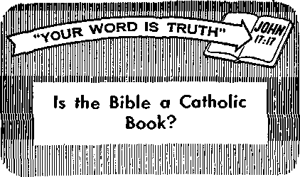

Mat Is Acceptable Worship?
PAGE 5
wime in Our Streets
F=>A<3 E I 2
wimos—At Home
in the Far North
1=>X\<S|E 17
eer Up, Cardiacs!
PAG E 2 1
DECEMBER 22, 1959
THE MISSION OF THIS JOURNAL
News sources that are able to keep you awake to the vital Issues of our times must be unfettered by censorship and selfish interests. "Awake!” has no fetters. It recognizes facts, faces facts, is free to publish facts. It is not bound by political ambitions or obligations; it is unhampered by advertisers whose toes must not be trodden on; it is unprejudiced by traditional creeds. This journal keeps itself free that it may speak freely to you. But it does not abuse its freedom. It maintains integrity to truth.
"Awake!” uses the regular news channels, but is nor dependent on them. Its own correspondents are on all continents, in scores of nations. From the four corners of the earth their uncensored, on-the-scenes reports come to you through these columns. This journal’s viewpoint is not narrow, but is international. It is read in many nations, in many languages, by persons of all ages. Through its pages many fields of knowledge pass in review—government, commerce, religion, history, geography, science, social conditions, natural wonders—why, its coverage is as broad as the earth and as high as the heavens.
“Awake!" pledges itself to righteous principles, to exposing hidden foes and subtle dangers, to championing freedom for all, to comforting mourners and strengthening those disheartened by the failures of a delinquent world, reflecting sure hope for the establishment of a righteous New World.
Get acquainted with "Awake!" Keep awake by reading "Awake!”
itv •illl—*l>< m — im
Published Simultaneously in- the United States by the WATCHTOWER BIBLE AND TRACT SOCIETY OF NEW YORK, INC.
117 Adams Street Brooklyn 1, N, U. S, A-
and in England by WATCH TOWER BIBLE AND TRACT SOCIETY
Watch Tower House, The Ridgeway London N.W. 7, England
N. H. Knorr, President Grant Suiter, Secretary
Printing this issue; 3,000,000
4Awaka!’’ fs published in the folrowing 21 lanmijes: Semi month ly- Afriktuns, Danish, Dutch, English. Fiun-isli, French, German, Greet, Italian, Japanese, Norwe* Kian, I’miugricise, Span lab, Swedish, Tagalojc.
Monthly—Clnyanjn. Indonesian, Korean. Polish, Ukriln-lan, Zulu.
Yearly subserlplltu] raU's
0KIbb$ for semimonthly editions
America, U.S., 117 Adams St., Brooklyn 1, N.Y. $1 Australia, 11 Rerosford Ed., Strathfield. N.I3.W. 8/-
Canada, 150 Bridgelnnd Aw., Toronto 19, Ont. $1, England, Watch Tower Jlotbe,
The Ridgeway, London N.W. 7 7/~
New Zealand, (121 New North Rd,, Auckland. S.W. 1 7/-Stilth Africa, Private Rae, I'.O. Elandsfonteln. Tri. 7/
Monthly eilUinns cost half the above rates.
4d a copy (Australia, 5d)
Remittances for subscriptions should be sent to the office In your country. Otherwise send your remittance to Loudon. Notice of expiration is sent at least two Listtes before nubscrJ Dllon expires.
CHANGES OF ADDRESS should reach ■$ thirty dayi before your moving date. Give is year old and new addrm (If possible, year old address label). Watch Tower, Watch Tower House. The Ridgeway, London N.W- 7, England.
Entered he netond-cLw mailer at Brooklyn, N.Y. Vrinicd in Rugland
The Bible translation used in "Awake!" is the New World Translation of the Holy Scriptures. Whim other translations are used the following symbols will appear behind the citations:
AS — Amorifiiin standard Version A7r — An Amoricni Ti n ns Inti on AV — Aulhorlted Version (Kill) - J. 5. Darby's vursiuu
Dy - Caiholic Ttouuy ver* h <ii A’/J ■■ Tile Emphatic Diaglolt JP — Jewish Publication Sou. D& - Isaac Leeper's version
JIJo — Jarnos Moffatt's version jh?tJ - J. B. BolliRrhatTr's version RS ” Revised Stainla.'it Version Yff ■■ Kobert Young's version
'Hi im ■ ini^—w
CONTENTS
Eskimos—At Home in the Far North 17
Customs from Bible Times Found
“Your Word Is Truth”
York city was packed out with 15,000 persons watching a performance of the country’s largest circus. The twelve-tiger act had just been completed and Rajah, the leading tiger, was heading for the passageway out of the cage. Suddenly he sprang at Ila, a tigress, and seized her by the throat. The crowd watched with breathless horror as the two tigers fought a blood-chilling battle.
By the time the animal trainer and the circus attendants had succeeded in separating the two beasts it was too late for Ila. A half hour later she died from loss of blood. What caused that fight? Pride. Ila had committed lese majesty by daring to cut in ahead of Rajah as he led the tigers out of the cage.
Well did the disciple James write regarding pride: “If you have bitter jealousy and contentiousness in your hearts, do not be bragging and lying against the truth. This is not the wisdom that comes down from above, but is the earthly, animal, 'demonic.”—Jas. 3:14,15.
Pride is a trait we must stand guard against. It might be likened to a deathdealing virus that abounds everywhere and to which we are peculiarly susceptible owing to the transgression of our first
parents. If unchecked, it causes the heart to lose all appreciation for life, both of its own and that of others. Individuals resort to duels and nations resort to war because of pride. It was pride that caused Austria to declare war on Serbia in 1914, that caused Hitler to declare war on Poland in 1939 and Japan to make her attack on Pearl Harbor.
God’s Word, from beginning to end, tells what a killer pride is. Did not Satan the Devil sacrifice the lives of our first parents on the altar of his pride, and will he not suffer destruction himself because of it? Well does James say that pride is demonic wisdom, for the prince of demons is the very personification of pride. What egotism was his to boast: “To the heavens I shall go up. Above the stars of God I shall lift up my throne, and I shall sit down upon the mountain of meeting, in the remotest parts of the north. I shall go up above the high places of the clouds; I shall make myself resemble the Most High.” The fact that he offered the Son of God all the kingdoms of the world and their glory if he would bow down and do an act of worship to Satan is further proof of his great pride.—Isa. 14:13, 14; Matt, 4:8, 9.
Pride made Satan the Devil both the first killer and the arch killer. He is responsible for the first death as well as the deaths of all the billions of humans that have died since Abel. Jesus correctly labeled Satan as “a manslayer when he began.” And ever since he has used pride to influence men to do his murderous biddings.—Gen. 4:4-8; John 8:44.
Among the foremost Scriptural examples of how pride causes a disregard for human life is wicked Haman. From beginning to end he is shown as inordinately proud and vain. When ‘‘Haman kept seeing that Mordecai was not bowing low and prostrating himself to him,” he “became filled with rage. But it was despicable in his eyes to lay hand upon Mordecai alone, for they had told him about Mordecai’s people, and Haman began seeking to annihilate all the Jews who were in all the realm of Ahasuerus.” Imagine the pride of a man that would demand the' death of thousands upon thousands of men, women and children, the destruction of an entire nation, all because a single one of that nation had refused to bow low and prostrate himself before him! Haman even offered to pay the equivalent of $12 million into the king’s treasury for the satisfaction of destroying all the Jews! While divine Providence intervened to spare the Jews, Haman’s pride nevertheless caused the death of about 76,000 enemies of the Jews, actually dupes of Haman.—Esther 3:5-9; 9:12,15,16.
King Herod the Great was another that illustrated that pride is a killer. So that he and his own offspring and not Jesus of Nazareth should rule Palestine he decreed the death of all male children two years old and under, “in Bethlehem and in all its districts.” —Matt. 2:16.
Thirty-three years later the religious leaders of Judaism as well as Judas, one of the twelve apostles of Jesus Christ, gave furtherproof that pride is a killer. Because Jesus’ rebukes wounded their pride they “began to seek how to destroy him.” Their pride caused them to be guilty of the blackest crime on the pages of human history, the murder of the Son of God. Some thirty-five years later their pride was to be their own undoing. It was pride that caused them to rebel against the Roman yoke, resulting in more than a million of them perishing in the destruction of Jerusalem A.D. 70.—Mark 11:18.
Secular history, from that time down to our day, gives many more examples. Among the many that might be mentioned is Constantine, reputedly the first Christian emperor, who waded through seas of blood to establish himself as emperor of the Roman Empire. And among the most notorious modern examples must be mentioned Adolf Hitler, whose pride plunged the world into World War II.
Truly, pride belongs to the wisdom of this world and is earthly, animal and demonic. The proud are looked up to, bowed down to and envied in this old world. Pride rules the lower animals, and that is not only true of the jungle beasts but even of farmyard animals, as scientists have shown. And above all, pride is the personification of the prince of demons, Satan the Devil.
There is also a lesson in this for dedicated Christians. Although these would not think of taking the life of another human, yet they also, if not careful, can become killers because of pride. How so? In that pride may cause ill will and hate, and “everyone who hates his brother is a manslayer.”—1 John 3:15.
WHAT IS ACCEPTABLE
How eon it be determined?
Does God care how devotion is shown?
IS IT up to man to decide how his Creator should be worshiped? Is he the one to determine what is acceptable or unacceptable devotion? Is the worship of God subject to the whims, imagination and traditions of humans? Rather than being determined by man, acceptable worship is determined by God. He is the One that lays down the limiting factors that mold religious devotion so that it is pleasing in his sight.
Because man does not generally recognize this fact, a great number of conflicting religions have come into being. Each has its own religious philosophy and form of worship, with some professing to be Christian and others not. These cannot be considered as different paths leading to the same God, because the supreme Being does not accept all forms of worship. This was made clear when he expressed himself to the nation of Israel: “You must not make for yourself a carved image or a form like anything that is in the heavens above or that is on the earth underneath or that is in the waters under the earth. You must not bow down to them nor be induced to serve them, because I Je-
IP?
hovah your God am a God exacting
who on a
£ exclusive devotion.” (Ex. 20:4, 5) He thus limited the religious devotion that would be acceptable to him. How can a person who ignores this limitation and follows his own philosophy be going path that leads to the true God?
The expressed will of Jehovah God must be taken into consideration, otherwise a person’s religious devotion is in vain. A religious path that fails to meet the requirements God has set down does not lead to him. A person’s form of worship must not be the way he imagines it should be, but the way God says it should be. It is written: “There exists a way
that is upright before a man, but the ways of death are the end of it afterward.” (Prov. 14:12) That is because it is not God’s way.
The divine requirements for acceptable worship are clearly laid out in the Holy Bible, the book that expresses God’s will. At James 1:27 it says: “The form of worship that is clean and undefiled from the standpoint of our God and Father is this: to care for orphans and widows in their tribulation, and to keep oneself without spot from the world.” The fact that this scripture speaks of a form of worship that is undefiled eliminates any contention that all forms of worship are acceptable to God.
Since exclusive devotion is required by the Most High, any religion that fails to give it must be considered as unclean in his eyes. Thus worship that incorporates the venerating of images, of relics and any other material body would come under what is classed as defiled. Remember, God specifically instructed the nation of Israel not to give devotion to such things. “You must take good care of your souls, because you did not see any form on the day of Jehovah’s speaking to you in Horeb out of the middle of the fire, that you may not act ruinously and do not make for yourselves a carved image, the form of any symbol, the representation of male or female, the representation of any beast that is in the earth, the representation of any winged bird that flies in the heavens, the representation of anything creeping on the ground, the representation of any fish that is in the waters under the earth; and that you may not raise your eyes to the heavens and indeed see the sun and the moon and the stars, all the army of the heavens, and certainly get seduced and bow down to them and serve them.”—Deut. 4:15-19.
Religions that incorporate these practices in their devotion do not lead to God. They are not acceptable to him, but are unclean in his eyes. The same can be said of those forms of worship that give religious instruction that is contrary to what the Creator has given in his written Word. “It is in vain that they keep paying respect to me, because they teach commands of men as doctrines.”—Matt. 15:9.
That such worship is defiled in the eyes of God is also pointed out in the instructions given at 2 Corinthians 6:14, 15, 17, which state: “Do not become unevenly yoked with unbelievers. For what partnership do righteousness and lawlessness have? Or what fellowship does light have with darkness? Further, what harmony is there between Christ and Belial? Or what portion does a faithful person have with an unbeliever? ‘Therefore get out from among them, and separate yourselves,’ says Jehovah, ‘and quit touching the unclean thing,’ ‘and I will take you in.’ ”
How can a person that persists in clinging to an unclean form of worship expect God to receive him as a worshiper? How can he expect to be shown divine favor or to have his prayers heard? Approach to God must be according to the way God says it must be.
James states in his definition of clean worship that such worship includes taking care of orphans and widows. Does this mean that a person must adopt orphans or help build and support an orphanage for God to accept his worship? Is that the work to which Christians must devote themselves? No, it is not. When Christ gave his followers the assignment of activity God wanted them to engage in, he did not command them to build orphanages and similar institutions. Instead, he said: “Go therefore and make disciples of people of all the nations, . . . teaching them to observe all the things I have commanded you.”—Matt. 28:19, 20.
The work of a Christian was to be that of teaching Scriptural truths, but that does not mean he is to have no regard for the need of orphans and widows. To ignore their needs callously would be contrary to God’s instructions. The nation of Israel" was commanded to care for them, for those that were Israelites as well as for those that were non-Israelite believers. Gleanings of the harvest were for them and the poor. Every third year a tenth of all the crops was to be devoted to their care. (Deut. 14:28, 29) Because widows and fatherless ones are without anyone to defend them, God said: “Render judgment for the fatherless boy; plead the cause of the widow.”—Isa. 1:17.
This godly principle of showing liberality and helpful assistance to the unfortunate and oppressed is binding on Christians today. In the Christian congregation of the first century, widows and orphans were given aid if they needed it. A widow, however, did not receive help merely because she was a widow. If she could provide for herself or if relatives could help her, no aid was given. ,
She had to meet certain requirements to qualify for congregational assistance. The instructions were: “Let a widow be put on the list who has become not less than sixty years old, a wife of one husband, having a witness borne to her for right works, if she reared children, if she entertained strangers, if she washed the feet of holy ones, if she relieved those in tribulation, if she diligently followed every good work.”—1 Tim. 5:9,10.
Thus we see that aid was not given to everyone that might make a claim for it. It might be noted that no provision was made to help widows outside the Christian congregation. Christians were not required to care for all the orphans and widows in the world, only those that met Scriptural qualifications. The responsibility for giving care to unchristian orphans and widows rested, not on the Christians, but on the religious communities to which they belonged.
The term “orphan” or “fatherless” does not necessarily mean, in the Bible, children that have lost their fathers in death. It means bereaved ones, and can, therefore, include adults who have lost a beloved friend, guardian and caretaker. Jeremiah said: “We have become mere orphans without a father. Our mothers are like widows.” And Jesus promised that he would not leave his followers to be orphans. (Lam. 5:3; John 14:18) The duty of persons who offer undefiled worship to God is not only to provide material care for widows and bereaved ones in need but also to give spiritual care to spiritual orphans and widows.
Clean worship, James says, must also include being unspotted from the world. A person cannot offer acceptable worship to God as long as he makes himself a part of this corrupt world and tries to promote or perpetuate its aims and policies. The world is not of God and is opposed to his sovereignty as well as his righteous principles. That is why Jesus made it clear that he was no part of the world. Regarding his followers, he said in prayer: “I have given your word to them, but the world has hated them, because they are no part of the world just as I am no part of the world.”—John 17:14.
The world belongs to Jehovah God’s archenemy and can have nothing in common with Him. Its purposes, principles, actions and fruits are contrary to what God says is good. For this reason James says: “Do you not know that the friendship with the world is enmity with God? Whoever, therefore, wants to be a friend of the world is constituting himself an enemy of God.” (Jas. 4:4) The worship that comes from persons who are friends of it is unclean in the eyes of the Creator. It is defiled and unacceptable to him. How, then, can religious leaders in Christendom justify their crowning of worldly kings, meddling in politics and giving open support to warring nations? By showing friendship for the world can it be said they are leading people to offer undefiled worship to God?
The person that offers acceptable devotion to Jehovah God does as James says. He keeps himself “without spot from the world.” He lives in it but docs not cultivate its friendship. He does not become part of its political activities and therefore indirectly responsible for violations of God’s laws by its political parties. Because of this stand the world will have no love for him, but neither did it have for Christ. “If the world hates you, you know that it has hated me before it hated you. If you were part of the world, the world would be fond of what is its own.”—John 15:18, 19.
In addition to keeping undefiled from the world and earing for widows and orphans, James mentions one more thing that is necessary for one’s worship to be acceptable to God. He says: “If any man seems to himself to be a formal worshiper and yet does not bridle his tongue, but goes on deceiving his own heart, this man’s form of worship is futile.”—Jas. 1:26.
The person that fails to exercise control of his tongue so that it speaks what is right in God’s eyes deceives himself if he thinks his worship is acceptable, even if he meets the other divine requirements for right worship. Jesus pointed this out when he said: “Not what enters into his mouth defiles a man; but it is what proceeds out of his mouth that defiles a man.” “Offspring of vipers, how can you speak good things, when you are wicked? for out of the abundance of the heart the mouth speaks. The good man out of his good treasure sends out good things, whereas the wicked man out of his wicked treasure sends out wicked things.”—Matt. 15:11; 12:34, 35.
The tongue must be controlled by accurate knowledge of the Scriptures so that it speaks and teaches right things about God and his purposes. A person cannot permit it to speak things that are contrary to God’s Word, even when such things are traditionally accepted and taught in many religious organizations. Neither can he compromise with worldly rulers by ceasing to speak Scriptural truths and God’s adverse judgment of the world. He will not permit worldly political and religious leaders to control his tongue so that he speaks only what is pleasing and inoffensive to them. He will not allow anyone in this world, no matter how much political power he may have, to hold the reins of his tongue. He will do as God told Jeremiah: “You must rise up and speak to them everything that I myself command you. Do not be struck with any terror because of them.” (Jer. 1:17) Like Christ, he will use his tongue to speak the truths of God’s Word boldly, for that is acceptable devotion to the Most High. “With the mouth one makes public declaration for salvation.”—Rom. 10:10.
God’s Word is the deciding factor of what is good and bad, and what is true and false, not the organizations, traditions and philosophies of men. “Let God be found true, though every man be found a liar.” (Rom, 3:4) That is the motto Christians must follow. Worship must be tailored to what God has said is clean and acceptable. “The hour is coming, and it is now, when the genuine worshipers will worship the Father with spirit and truth, for, indeed, the Father is looking for such kind to worship him.”—John 4:23.
THE SMOKER'S DEADLY COMPANION
<1 “The experts have stressed that lung cancer is becoming the number one killer among males more than 40 years of age. Lung cancer in the U.S. has increased
400 times in the past 30 years. ... A two to six year study of 6,000 persons who showed no symptoms of lung cancer initially was conducted by Dr. David A. Cooper of the University of Pennsylvania. At the end of the investigation period, 86 of the 6,000 had developed lung cancer. Of these victims, 85 were smokers.”—Science News Letter, May 16,1959.
By "Awoke!" correspondent in Bolfrta
THE best way to believe what you read and hear about Bolivia is to see this unique country with your own eyes. From the moment your plane touches down at “El Alto," the La Paz international airport, you will become conscious of its unusual character. The plane lands at an altitude that is above what many planes generally fly—13,300 feet. This is the highest international airport in the world.
Instead of a thriving metropolis surrounding the airport as you might expect, there is little else than a railroad yard and a few adobe buildings. There is no sign of Bolivia’s capital city, La Paz, with its more than 350,000 inhabitants. Despite assurances that the plane had landed at the right place, you may leave the airport with some misgivings. Along the road Indian women offer things for sale, and you may think it strange that they are wearing derby hats. Many visitors never expected to see women wearing that kind of headgear. What is even more surprising, practically every Indian woman wears one.
Not until you reach the edge of the mountain plain upon which you landed will you locate the city of La Paz. There, a thousand feet below you, it lies in a huge mountain-rin ged bowl. Needless to say, the scene is surprising and impressive. It is magnificent at night when the city is ablaze with lights.
When you finally enter the city you will find it to be a most interesting place, where the old is contrasted with the new. On a single block you may see old houses of distinctly Spanish architecture, with adobe walls that are over three feet thick, flanked by buildings of modern design. On the outskirts of the city are many one-room adobe houses that are the homes of almost pure Indians. They are a marked contrast to the modern office buildings and beautiful residential sections of the city. Although La Paz has rush-hour automobile traffic like other modern cities, it is not uncommon to see a flock of llamas being casually driven along a side street by an Indian that speaks little if any Spanish. It is only by seeing La Paz that you can believe the contrasts and unique sights that exist there.
Towering above the city to a height of 22,579 feet is majestic Mount Illimani, the fourth-highest mountain in the Western Hemisphere. A splendid view of it can be had from the main street of La Paz, Avenida Camacho. Above the snow line in the Andes mountains can be found Arctic weather right in the tropics.
About 80 percent of Bolivia’s population lives on the huge altiplano or high plain. This is a great plateau that has an average elevation of 12,000 feet. It varies from sixty-five to a hundred miles in width and is about 450 miles long.
Bolivia has not shoved the Indians aside but has made them a vital part of the country’s daily life and commerce. They make up 54.5 percent of the total population. The mestizos, persons of mixed Indian-Spanish ancestry, compose 30.9 percent of the population, and the remaining 14.6 percent consists of persons who are of Spanish-European descent.
If you should enter the colorful and unusual Camacho market in the center of La Paz, you will see Chola Indian women seated behind piles of merchandise of every description. They speak excellent Spanish, strike a hard bargain and are very independent. These descendants of the Incas have become prosperous from their business activities.
The Indians around La Paz speak Aymara, a dialect peculiar to that region, whereas those of Potosi and the valleys speak Quechua, a descendant of the tongue of the Incas. Much of the country’s 68 percent illiteracy among the adult population is due to the large number of Indians that speak no Spanish but use their dialects exclusively.
Schooling is now compulsory and has made great strides in the past twenty years. All teachers must spend some time teaching in isolated villages after graduation before they can get a position in the city schools. This may mean hardships for them, but it is helping the village children to obtain an education.
Jehovah’s witnesses are helping many Bolivians to learn how to read and to write. This is done in addition to teaching them the life-giving truths of God’s Word. It is a heart-warming sight to these New World missionaries to see Indians that have learned about the good things in the Scriptures standing at a door with Bible open, telling the householder about the good news of God’s kingdom.
The Bolivian people enjoy friendliness and cordiality. Upon entering an eating place it is the custom to say, "Buen pro-vecho" which is the equivalent of saying, “Receive the good from what you are eating.” It is not strange, when traveling on a train, to have the person next to you start a conversation by asking where you are from. Generally a good conversation follows. By the time the trip ends you feel as if you have known the person for some time. Visitors to Bolivia can enhance their trip by learning Spanish well enough to converse with these friendly people.
Most of Bolivia’s population lives in only 16 percent of the country’s total area. Large sections of the Republic are in jungle lowlands. The State of Santa Cruz, for example, comprises nearly one third of the total land area in Bolivia. This state is badly in need of development, for although it is larger than all Germany, it supports a population of less than one percent of that in Germany. The same problem of underpopulation exists in the State of Beni. It, too, is a jungle lowland and covers 20 percent of the total land area. The population it supports is only 5 percent of the total Bolivian population. Meat from the cattle raised here is shipped out by airplane because of poor ground transportation.
There is only one paved highway in the country. It links Santa Cruz with Bolivia’s second-largest city, Cochabamba. A traveling representative for the Watch Tower Society who visits congregations of Jehovah’s witnesses in many parts of Bolivia often begins his trip by plane, then bounces along in a truck for awhile and finishes the trip on mule back.
If you should see a cactus-like plant in Bolivia called Puya raimondii do not pass it by without photographing it. This is a very rare and unusual plant. Its flower stock is sometimes twenty feet tall, with a circumference of eight feet. The plant grows for 150 years before it sends up a flower stock and produces blooms. So if you see one blooming you will see something that happens only once in one and a half centuries.
You will certainly want to see Lake Titicaca, the world’s highest lake on which steamships operate regularly. Its altitude is 12,500 feet above sea level. The reflection of the surrounding mountains in its deep-blue water is such a beautiful sight that it has to be seen to be believed. The rushes that grow in the lake are as important to the Indians there as bamboo is to the Chinese. Houses are thatched with it, raincoats and boats are made from it and its young roots are eaten like asparagus tips. Some of the largest salmon trout in the world live in this lake.
At the time of World War II Bolivia was the world’s greatest producer of tin, but because prices for tin and the demand for it dropped, Bolivia has suffered great economic trouble. It is, in fact, one of the poorest countries in the Western Hemisphere.
This may seem strange in view of the great wealth that has come from its natural resources. For two hundred years it was the world’s foremost producer of silver, but Spain, not Bolivia, profited from the silver. The Spanish took the silver of Cerro Rico of Potosi and left nothing for the people they enslaved to do the digging. It has been estimated that Cerro Rico yielded one billion ounces of silver, all of which went to Spain.
Simon Patino became the seventhrichest man in the world because of Bolivian tin, but he did not help Bolivia’s economy by investing his money in Bolivia. Instead, he invested it in foreign lands.
While you travel about Bolivia you will get captivating views of unspoiled primitiveness. Between cities there are only a few mud huts covered with straw. No other man-made structures mar the natural appearance of the land. Occasionally a herd of llamas will be seen grazing on what little grass there is on the Altiplano. These unique creatures are used primarily as pack animals.
Bolivia’s second-largest city, Cochabamba, is located at a lower altitude in one of the many fertile mountain valleys. Its average winter temperature is 57 degrees and the average for summer is 67 degrees. Although the city is over 8,000 feet in elevation, people in the higher altitudes will often go to it to get out of the higher altitudes. The higher up the mountains people live, the cooler the temperature becomes and the more rarified the air is. There is a mining camp at 15,600 feet where it is necessary to sleep under six blankets in midsummer. In spite of the cool nights, there are few of Bolivia’s highland homes that have central heating.
The highest cosmic observatory in the world is located in Bolivia, at an altitude of 17,000 feet. A few hundred yards from it is the highest ski run in the world. The scenery, of course, from this high altitude is magnificent.
When you have seen Bolivia with your own eyes you will readily agree that it is unique and has much that is well worth seeing. Its majestic mountains and awesome scenery should impress you with the wisdom and might of the Creator of our beautiful earth. “How many your works are, O Jehovah! All of them in wisdom you have made. The earth is full of your productions.”—Ps. 104: 24.
ALKING the streets at night has become a perilous venture. Even a casual stroll through the park or just
-■»
OUR,
plain sitting on one's doorstep is no longer safe. These pleasant moments of relaxation can end up in brutal attack, rob--bery, rape and even death. This— because violence is O)> the rampage. It is an epidemic the world over, said Judge Samuel S. Leibowitz of New York. Ours has become “the hoodlum era, the era of the switchblade and the zip gun, the flailing belt buckle, the slashing bicycle chain,” writes Arthur Hoppe, of the San Francisco Chronicle. “This is the era of violence on the streets.”
Serious juvenile crimes in the United States showed an increase by 8.1 percent in the last year. The crime rate went up to 9.3 percent above the 1957 high mark. Director of the F.B.I., J. Edgar Hoover, called the 9.3-percent increase “shocking.” Since 1950 crime has increased nearly four times as fast as the population. “We are fast approaching the time when this nation will have over 2,000,000 persons who have appeared in juvenile courts,” said Senator Thomas C. Hennings, Jr., chairman of a Senate subcommittee to investigate juvenile delinquency. “Although our child population has increased only 25 percent from 1948 to 1957, appearances before juvenile courts have increased almost 150 percent in the same period. This is a
I?
shocking situation.” What the statistics do not show is the spreading pattern of senseless brutality, the increasing outbursts of pure sadism.
Juvenile criminals, in their attacks, spare no group. Victims include old people, young people, socially prominent people, visitors, businessmen, lawmen and ordinary citizens; anyone who dares to cross their path gets a taste of their violence.
Edgar L. Gilcreest, a seventy-four-year-old surgeon, had worked late in his office. As he started to walk down a quiet street from the bus stop to his home, six young men stepped out of the shadows, grabbed him, pinned his arms behind his back and beat him unmercifully. A knife blade slashed across his cheek and laid it wide open from ear to chin. They took his wallet and dashed off into the darkness. It used to be they would rob a person and then leave. But now they either slug their victims into unconsciousness, shoot them or stick a knife into them before leaving.
In Washington, D.C., where America's laws are made, a seventy-eight-year-old florist was sitting on his front porch enjoying the still of the evening. A teen-age gang, like a hungry pack of wolves, suddenly swarmed all over him. They covered his eyes and mouth with their hands and took his wallet. Before they ran off, they beat, his body into a pulp with their fists.
After citing the beating and robbery of the widow of Deputy Secretary of Defense Donald Quarles by a street gang, also the killing of a Bolling Air Force Base sergeant by a gang of young toughs he caught tampering with his car, and a number of other incidents, Representative Omar Burleson demanded that two companies of United States Marines patrol the streets of the District of Columbia at night to guarantee the safety of its citizens.
Down the line, Philadelphia, Chicago, Detroit, Boston and other cities have all had their share of teen-age violence. During the hot spells of July and August teenage crime in New York city reached epidemic stage. There were four teen-age killings in a week, which was too much even for New Yorkers to take. Old and young women were dragged off the streets by teen-aged hoodlums to be robbed, beaten and raped. Newsweek under the subheading “The Big Town—The Big Mess” said: “Much of the city is a jungle, where no one is safe after dark. Even in some schools, teen-age girls must walk the building halls in pairs as protection against rape.” The New York Times told the gruesome story simply by listing a number of headlines in one of its editorials. The shocking twist of events that continued unchecked into September sent New York city’s Mayor Wagner and the state’s Governor Rockefeller into separate huddles to work out a solution.
The trouble is not all with boys, either. Deep in the woods of Maine, in a small town, a sixteen-year-old baby sitter was about her business when seven girls broke into the house and assaulted her. They kicked and pounded her unmercifully, and then they fled. The baby sitter knew the girls. She identified every one of them. They were said to be among the “nicest” girls in town. One of the girls was the daughter of the town’s chief of police. The girls were members of a teen-age gang called “The Kittens"—female auxiliary to a male gang called “The Cats.” The reason given for the brutal attack was that there was a rumor in town to the effect that the baby sitter had dated a boy friend of one of the “kittens.”
Teen-age violence is not confined solely to the United States as some might think. It is a world-wide phenomenon of our time. South Africa is burdened with it. U. S. News <& World Report quotes a police colonel as saying: “There’s no law in the native townships once the sun goes down —anarchy just breaks loose.” This same authority reports: “On pay nights, one policeman says, ‘all hell breaks loose’ in the Negro areas. Gangs of young hoodlums, called ‘tsptsis,’ go up and down bus queues, robbing people by ‘mass production.’ In one hand, they hold out a hat for ‘donations’—in the other, a knife. Sometimes they force a black-African bus to stop, then board it and rob all the passengers and the conductor. ‘It’s almost impossible to get information,’ says a police colonel. ‘Everyone is too terrified to talk.’ ”
During 1955 in the Greater Johannesburg area, which has a population of about 1.7 million, there were some 895 known killings. New York city, with a population exceeding eight million, reported 315 homicides in 1956. London, with a similar population, had only thirty.
The island of Taiwan saw a 200-percent increase in juvenile criminal offenses between 1953 and 1958. The island of Pang-kor had a youth gang war in which one islander was killed, ten others were wounded, and eight houses were burned down. The youths fought with clubs and knives. Japan’s widowed mothers were being recruited for special police duty in an effort to curb juvenile crime in that land. Glasgow, Scotland, saw its worst crime wave since 1945. The total number of crimes was 25 percent higher than the year before.
Italy and France are being plagued by youth gangs and violence. Italy's newspapers reported juvenile violence almost every day of the year. Milan police have organized a special task force to fight youth gangs. Gang wars in France are similar to those staged by New York youth gangs. When the French police rounded up a group of twenty-six boys, ranging in age from fourteen to twenty, they found them armed with iron bars, brass knuckles, chains, whips and knives, with which they terrorized the neighborhood.
Youths in East Germany and in the Soviet Union are reported molesting and frightening people with gangland holdups. The New York Times tells of adolescent gangs and violence “in the large new housing projects near Moscow University and near the Leningrad Highway. In one project a colonel’s son was asked by a gang to help rob his father's apartment. He refused. The teen-agers pinioned the boy, took a sledge hammer and broke both his legs. In an adjacent block two teen-age girls were raped in a week by another gang. Parents in the new buildings have formed their own volunteer groups to work with the youngsters and try to bring the situation under control.”
Who are these delinquent youngsters? What are youth gangs? Why is this menace growing? What is being done to curb its spread ?
Youth gangs are usually made up of teen-agers or young adults in their early twenties. They are hardly a heroic-looking lot. When police nabbed a young gang leader, dramatized in the press as “Dracula,” they found him to be a slight, almost effeminate boy of sixteen. His lieutenant, a lad of seventeen, was just as frail. As a rule these delinquent youths come from unhappy homes. They are displeased with their lot in life. When a sixteen-year-old gang fighter was questioned about two killings, he snarled: “I don’t care if I burn; my mother could watch me.”
These young toughs are organized into gangs to gain a “rep" or reputation, that is, recognition in their neighborhoods. They crave excitement and feel the need of protection, so they steal and destroy.
There are about 150 or more youth gangs in New York city, with an aggregate membership of 6,500 to 7,500. They reign by terror over the slums, the drab housing projects and the city’s parks. Anyone who enters their territory, especially after nightfall, does so at his own risk. J. Edgar Hoover called some of these areas veritable “no man’s land.” Some gangs have two to three hundred members, but when there are signs of a “rumble" or war they can order a thousand or more “troops” into action. They have their own war strategists, generals, presidents, vice-presidents, and so forth. Their weapons are zip guns, pistols, rifles, sawed-off shotguns, pipes and chains, belts and knives.
Recently some of these gangs have been reaching out beyond marked boundaries. As a result, there have been deadly clashes between rival gangs. Often when anticipated clashes do not materialize, the worked-up young toughs, like a wild pack of wolves, run riot through the streets ref-leasing their pent-up emotions on peaceful citizens. When this happens, they destroy, rob, rape and kill without mercy.
It is these unprovoked attacks that have cast a shadow of fear over peaceful citizens and streets. Such lovely cities as Washington, D.C., are fast becoming cities of closed doors for many of its residents. Women are told not to venture out at night, and if they must, to keep off dimly lit streets. Mothers are fearful of sending their children out to the corner store. No longer is it wise to take a shortcut home through the park. New York city warns its visitors and residents to stay out of such beautiful parks as Central Park, Bronx and Prospect Park after dark. Now in lighted residential areas men are seen to walk faster and to glance back to see if someone is following. Even policemen find it advantageous to patrol their beats in twos and threes.
Fear has taken over. Money stolen can be replaced, buildings destroyed can be rebuilt, cuts will heal, bruises will fade, even broken bones will mend, but the loss to man is something far greater than all of these. His greatest loss is his peace of mind, his sense of security that he once enjoyed when he walked the streets, when he sat on his front porch or in the city park. These are the irreparable losses that must be regained.
Police say racial frictions are closely related to the upsurge in crime. A young Puerto Rican accused of leading a murderous attack was quoted as saying: “We went there to get the Irish and the Italians. We heard Puerto Ricans were being pushed around in the neighborhood.” Some people blame judges for “coddling” juvenile gangsters. They say judges have been too lenient, that youth boards and consultants have been overly sympathetic. Still others blame the flow of alcohol and narcotics for the ferocity of youth crimes. Magistrate Walter 'Gladwin, in Bronx Adolescent Court, stated that if only the parents of youth had made “the boys repeat the Ten Commandments as we did when we were children, particularly the Commandment, 'Thou shalt not kill,’ we would not have these killings in New York.”
Whatever the cause for youth violence, officials promise that from now on there will be no more “kid-glove” treatment. At least eighty-five cities in the United States have turned to the curfew to help control youth. Most of the curfew laws affect youths from seventeen years old and under. Both parents and police like the idea of the curfew. Police in Washington, D.C., have issued special instructions to women advising them what to do in case of trouble. Signs have been posted warning women to keep off dark streets. Some women have been supplied with police whistles to sound in case of danger. In Pennsylvania the law is that if any teenager is convicted of any criminal act, the parents are fined, and, in some cases, even imprisoned. Chief of the juvenile aid division, Harry G. Fox, said: “Rarely does a boy or girl whose parents have been subject to court action show up as a second offender.” In Baltimore, officers and German shepherd dogs patrol the streets from nightfall to dawn. In New York city, Police Commissioner Stephen P. Kennedy canceled all days off for his 23,428-man police force and mobilized 1,400 extra patrolmen and rushed them into explosive areas. A camp system patterned after the old Civilian Conservation Corps is proposed. A ban is sought to stop the flow of illegal arms and narcotics into the hands of youngsters. Judge Leibowitz says that something must be done to advise young people on how to cope with “this crazy world we live in.” He asserted that where family bonds are tight, crime is at its lowest, that education should begin at the marriage license bureau to help keep the parents out of the divorce courts and to help them to raise their children. Home Secretary R. A. Butler of Scotland, a father of four, said that the best treatment for juvenile delinquents was a pat on the back “administered lower down.”
The big question is, Will these proposed remedies work? Children are not born delinquents. To a large extent they merely copy their parents or copy patterns set for them by the adult world. We want our children to be honest and to obey laws. But how many adults are honest and obey laws? J. Edgar Hoover stated .that in the last year the number of criminal offenses noted by the police forces came to 2,796,400, and the vast majority of these offenses were committed by adults. Who is it that has set the pattern in which bitter territorial wars are waged, where live amuni-tion is used and lives are taken? Still adults appear aghast when they hear of youth gang wars. From whom do the children learn racial and religious prejudices, how to fight and kill? A newborn infant knows of no skin color or prejudice. But before it is hardly old enough to walk it is already indoctrinated with the fears, superstitions and hates of the adult world. Are we to blame youths for what the adult world has taught them? This is not the excusing of juvenile crime and violence, but a call for a more genuine look at the cause.
Parents want their children to be honest, upright and good—to be what they themselves may not be. They say, ‘'Son, you must be honest.” But in the fiscal year 1958 the bad checks that came to the attention of the F.B.I. had a face value of $8,000,000. Says William Hard: "The cost of employee dishonesty in American business enterprises of all kinds can safely be estimated at somewhere between 500 million and one billion dollars a year. And it is increasing. ... 70 percent of dishonesty culprits in the most recent months of complete record have been women! . . . Dishonesty losses now cost the country many times as much per year as fire losses.” Certainly people cannot expect to straighten the children out with that kind of example. Philip Wylie’s article “Are We Becoming a Nation of Chiselers?” clearly shows that chiseling, from the top down, is "epidemic.” He states: “One out of every three working Americans is now covered by some sort of surety bond—a gauge of the trust employers have in employes!” Still parents are amazed at the distrusting nature of their children. Can we teach good principles with wrong examples? Magistrate Gladwin says it would be different if only the parents of youth had made the boys repeat the Ten Commandments. But who is there to get the 'parents to repeat and practice the Ten Commandments?
On one occasion Jesus Christ said: “Why, then, do you look at the straw in your brother’s eye, but do not consider the rafter in your own eye? Or how can you say to your brother: ‘Allow me to extract the straw from your eye’; when, look! a rafter is in your own eye? Hypocrite! first extract the rafter from your own eye, and then you will see clearly how to extract the straw from your brother’s eye.” Doubtless this principle presents the surest remedy for juvenile crime and violence. Let adults first get rid of the rafter that is in their own eyes—the corruption and crime, the gangsterism and immorality— then, perhaps, they will see youth’s true problem. At least they will have an honest basis for presenting practical remedies that will alleviate the deteriorating conditions among youth. "For whatever a man is sowing, this he will also reap,” is a divine principle. If adults turn to God and conform to his righteous law as set out in the Bible they will provide youth with good examples. Youth will follow, and peace will return to the streets of the world. —Matt. 7:3-5; Gal. 6:7.
ing to the east as far as Greenland and others heading west to the farthest tip of the Aleutian Islands. Because of their geographic isolation and genetic accentuation, in some areas they have developed their own particular facial features, but as a rule they have the Oriental look.
THE Eskimos are a widely dispersed people who inhabit the most northerly and broadest stretch of land of any people on earth—from Greenland through Northern Canada to Alaska and up to the western tip of the Aleutian Islands, a distance of more than 6,000 miles. Because they are so widely settled, they have developed cultural patterns, habits, and customs that are not known to many people.
Most people imagine that the Eskimos live in igloos or snow huts and share a perennially frozen home, surrounded by polar bears, foxes, reindeer and dog teams. While this was true in some respects many years ago and periodically now a hunter may spend a day or two in an igloo when caught in an Arctic storm, today the Eskimo lives in timber-constructed homes, which are usually heated by an oil stove. Many younger Eskimos do not even know how to construct an igloo. Modernization in the way of schools, hospitals and timesaving equipment in the home as well as on the sea has helped some Eskimos to enjoy a better standard of living.
Where did the Eskimo originate? It is generally agreed among anthropologists and archaeologists that they migrated from Asia by way of Bering Strait, some follow-
These people are very happy, congenial and hospitable. If you were to visit their village, you too would find yourself laughing with them at the “blanket toss,” sailing in their skin boat called the “kayak,” rejoicing with the hunters after a successful hunt, tasting a bit of “muktuk,” wearing “mukluks” and eating some Eskimo “ice-cream” with delight.
Their customs and games may seem strange to you, but they are very enjoyable to the Eskimo. For instance, let’s watch their “blanket toss.” The game is unique. A group of Eskimos, men and women, will gather together in a circle, with one hand on the edge of a skin blanket made of split walrus hide. The skin is so resilient that it produces a powerful springlike effect. One player will step to the center of the blanket, and at the command of the captain all will move away from the center and pull. As the skin stretches it begins to toss the performer into the air, first a few feet, then again and again tossing the man higher and higher. The longer one can remain without falling, the higher he can be thrown. Some buoyantly ascend to heights of fifteen feet or more. In some parts, this becomes a competitive game.
Football is another game that is well liked and played by the Eskimos in the Arctic. Men and women play on both sides, and often this contest is played under the scenic northern lights. Usually the game gets rough, as both sides are very eager to win, and women can play it as rough as men.
Eskimos love music, and many sing their native songs. Usually festive and special occasions are celebrated with an all-out dance. Their sealskin-covered feet romp to music that may carry on nonstop for three to four hours. The music is provided by organ-like instruments or Eskimo drums.
For centuries the Eskimo has enjoyed an abundance of food, but today this situation is rapidly deteriorating. Big game hunters, commercial fishermen and sportsmen with their modern weapons have reduced game and fish in the far north. This has created a shortage for the native. Because of dwindling caribou herds, seals and fish, it has been necessary for some Eskimos to move to other areas in search of food. The Canadian Government has evacuated some settlements in Canada’s Arctic where the population was on the verge of starvation. Eskimos are confronted for the first time with the problem of having to spend money to acquire supplies they need, instead of acquiring them through hunting and barter. Their diet consists chiefly of fish, moose, reindeer meat and various birds. They waste nothing of a carcass that is usable, and, until recently, never even had to buy meat.
It may seem strange to some that a boat is employed in hunting. A wooden-framed boat covered with sealskin sewed together by sinews is what the Eskimo calls his "kayak.” What can one hunt on the open sea? Aside from the whales, whose raw blubber is a delicacy called "muktuk,” the Eskimo is very fond of seal meat, especially that of the bearded seal called "oogruk.” The meat is high in food value and its skin is primarily used for making the soles of Eskimo shoes called “mukluks.” The mother Eskimo wets the skin and, after letting it stand awhile, she chews it and shapes it for the bottom of the “muk-luk.” This renders it pliable, and it also proves to be sufficiently durable to stand up to the wear and tear of frozen snow and sharp ridges of ice.
Seal oil is a commodity that has many household uses in the Eskimo home. In addition to cooking it is used for flavoring food. This is done in the most convenient manner—merely by dipping raw or frozen fish into the oil and eating it. For dessert, seal oil can be employed to make icecream. This is done by melting pieces of tallow and whipping it with a measure of seal oil. Snow or water is added to bring about a light, fluffy texture. To add flavor and color to this delicacy, they add wild cranberries, blueberries or diced meats. It is very wholesome and the whole family delights in this treat.
Canadian Eskimos, in some parts, are suffering from chills and colds, no doubt because of turning to the white man's clothing, which is not suitable for the Arctic weather. Their own traditional furry garments were ideal for repelling the cold. Concerning their style of clothing the Alaska Sportsman magazine, October, 1958, said: “The recently stylish sack look, which strained many a clothing budget, presented no problem to belles of the Arctic. A thousand years ago the Eskimos achieved the sack look—for all sizes, all ages, both genders—in the parka. Practi-cah though it is, a less revealing garment would be difficult to design. Yet the popularity of love and marriage endures among the Eskimos—a consoling thought for alarmists who fear for the survival of the human species if feminine contours are camouflaged.”
The Eskimo is quite religious. The immortality of the soul is predominantly believed by the Eskimos through the north. Superstition is therefore still strong. Centuries back, a dead man’s possessions were buried with him, and sometimes slaves or dogs were killed and buried with their masters or chiefs.
Segregation or integration is the question that some authorities cannot agree on. The decision may largely determine the future of our Eskimos. The Edmonton Journal (November 17, 1958), reporting on comments of Roman Catholic missionaries in the Arctic, quoted from their magazine the following: ‘‘Large-scale activity by the white man in the Arctic during the last few years has resulted in serious problems. Alcoholism, previously unknown among Eskimos, now is making ravages; in many places organized prostitution on a large scale has been witnessed and juvenile delinquency, previously non-existent, has become a problem with which the authorities seem unable to cope.”
If integration wins out, for what will the Eskimo be educated? Can he compete with the white man in securing work? What standard of living will he maintain? Can the Eskimo abandon his dog sled for the tractor and replace seal as a diet for canned foods in a few years? Said the Scientific American magazine of November, 1958: “It is a picture all too familiar to anthropologists: a once-thriving independent people, admirably disciplined for life in a rigorous environment, now impoverished, diseased and spiritually weakened, its ancient culture all but destroyed. The story might serve as a lesson to us. But it is probably too late to save the southern-most of our Eskimos.”
Today, it is heart-warming to see a number of these folk accept the truth and take their stand with the New World society, for, doing so, they have the hope of living forever in a new world (Isa. 65:17), in which they will neither starve nor freeze, nor become the victims of error and neglect.
What Parents I
*3? Writing about a general change of paren- i[ tai attitude that is having an “evil effect'’ on youth, Judge Elijah Adlow, chief justice of '' the Municipal Court of Boston, has said: i[ “There can be no question that the improvement in the condition of the average man, Ji with its increase in earnings, has contributed ■[ radically to the change in attitude of parents. Most of them overlook the part which strict discipline, scanty allowances, and hard work ■[ played in their moral and physical upbringIng. Instead they are determined to give to J, their children what was denied to them. They ■[ buy them better clothes, provide them with larger allowances, enable them to participate in sports, to attend movies, to enjoy summer J vacation, and to do all those things calculated Ji to make life agreeable. They not only relieve [! them of the little tasks or chores which once ij
Way Overlook
I were a part of a boy’s life, but they even 1 frown on the performance of any manual I labor, particularly for hire. The industry that [ was once encouraged in youth as a virtue j is now regarded as an interference with the । right to enjoy life.
i “This generosity on the part of parents । has had an evil effect on the generation upon , which it has been lavished. The little gifts | which once provided the great incentive to ; youth for obedience and industry are now without effect. What was once awaited as an act of kindness and generosity is now demanded as a right. And the kindness of parents which makes occasional work unnecessary has resulted in building up in Young America a pronounced aversion for manual labor and toil.”—The Atlantic Monthly, July, 195S.
CUSTOMS FROM BIBLE TIMES FOUND IN WEST AFRICA
By Watch Tower missionary in Liberia
EST AFRICA, bewildering and fascinating as a storybook, is the home of colorful people with interesting habits. Here ancient customs of Bible times are cherished and practiced.
In Freetown, Sierra Leone, a panorama of tropical freshness and beauty, we make an unusual discovery. While preaching the good news of God's kingdom from house to house one is suddenly arrested by a sharp hissing sound. You look up and on the second floor of a nearby building someone beckons. What a unique way of attracting attention. That hissing sound amidst noise is more penetrating and effective than yelling at the top of one’s voice, “Hey, you.” Hissing is an ancient practice, for Jehovah himself tells us at Zechariah 10:8 that he will hiss and gather his servants in the latter days.
Another interesting find awaits one at Abuiba in Iboland, Nigeria. Calling at a chief's compound we wait in the reception hut. Soon someone enters, greeting us. He takes a wooden object in the shape of a shallow nut bowl with a handle shaped like a human head. The inside of the bowl is covered with white powder. It is extended toward us and we touch the inside of the bowl with our fingers. This is their special way of welcoming a stranger. In olden times, when the villages and tribes were isolated from one another and at enmity, strangers were looked upon with suspicion. Once a stranger touched the bowl his chalk-covered fingertips were rubbed against his forearm leaving a white mark. This sign Indicated that the stranger had been officially welcomed into the village, his life was guaranteed and everyone was responsible for his safety. However, if no such welcome Was extended, the stranger entered the village at his own risk. The Medes and Persians of long ago had a similar custom. No one could come to see the king unless he was invited; anyone entering the court unbidden was to be put to death unless the king held out the golden scepter, which meant life to the one touching it. We read about it at Esther 4:11; 5:2, 3.
Entering a town in Ibibioland, Nigeria, a noisy crowd is heard celebrating in the market. The object of the jubilation is a man carrying on his shoulder an overly plump girl bedecked with a crown. She is a bride being taken to her husband's home. Months before her wedding the girl had retired to a reserved room and underwent special preparation rites. During this time she did no laborious work. Women brought her food and rubbed her body first with palm oil and later with white clay. Preparing girls for marriage thus is as ancient as the Medes and Persians, for we read at Esther 2:12 that Esther underwent twelve months of preparation rites, six months with oil of myrrh and six months with balsam oil, before being brought to King Ahasuerus to be his wife.
In Biblical times people had an interesting way of naming children. Names were full of meaning. They told a story rather than just being pleasant-sounding to the ear. Take the example of Rachel, Jacob's wife, who died giving birth, with great difficulty, to a child. Fittingly the child was named "Benoni,” meaning “Son of my sorrow,” to depict the sorrowful occasion, (Gen. 35:17, 18) Among the tribes of West Africa we find the same practice to this day. Here is a bright smiling Yoruba boy of Nigeria whose name is Babatunde. What does it mean? Well, his father died shortly before his birth so it was believed that the spirit of the dead father had entered into the newborn child. Consequently he was named Babatunde, meaning “Father comes back.”
Now we see a sight that perhaps would be the envy of many fair ladies, a distinguished man in colorful robes wearing a costly coral necklace. The man is a chief and the necklace is a sign of authority. This is an age-old custom. Why, Pharaoh himself placed a gold necklace upon Joseph's neck when making him ruler over Egypt.—Gen. 41:42.
Although these customs of Bible times excite interest, yet in themselves such practices do not gain favor or merit with God. However, there is a practice the Bible mentions that can gain favor with God. It is the worship of Jehovah God. Many West Africans are learning this most ancient of all practices. Every day they are praising Jehovah God, with the hope of living forever in God’s new world.
r Cheer Up, Cardiacs/J
MODERN MEDICINE HAS GOOD NEWS FOR HEART PATIENTS
QES, cheer up; there is good news for you, whether you have had a heart attack, are suffering from some other form of heart disease, or whether you merely fear heart trouble.
For one thing, chances of surviving a heart attack are steadily improving. More than 80 percent recover from their first one and of these more than three out of four are able not only to return to the same job they held before but to hold on to it. More than that, time and again it has been found that moderate work, rather than enforced idleness, is good for the cardiac. All this is largely owing to the four-pronged attack modem medicine is making on heart disease by means of surgery, drugs, psychiatry and physical therapy*
In fact, many a person has said that the heart attack was the best thing that could have happened to him. Thereby he has discovered a new way of life, which, while less strenuous, is nevertheless more enjoyable than his old one ever was. What he is doing now to avoid another attack is what he should have been doing in the first place to prevent one. It might even be said that heart attacks are one of the ways by which the laws of God impress upon puny man his stature. As one physician told his heart patient: “You have to learn that you are human—and subject to human limitations.”
Today President Eisenhower keeps on working eight to ten hours a day, five days a week, although having had both a coronary heart attack and a slight brain stroke. And another powerful political figure at Washington, D.C., senate majority leader Lyndon Johnson, though also having experienced a severe heart attack a few years ago, works even longer hours. According to him, after one has had a heart attack he gets more joy out of living because he learns to lead a normal, sensible well-balanced family life. He no longer gives his subordinates stomach ulcers! Before his attack his family saw little of him, but now, as his young daughter expressed it: “Daddy, it’s sure nice to have you around the house so much.”
If you are suffering from heart disease, more likely than not in times past you abused your body’s margin of safety. Now you know your body’s limits. You may have been extremely conscientious and so were fearful of not doing all you should. Now you know where to draw the line, and that is a comfort. As “The Happy Cardiac” wrote in Harper's Magazine, March, 1959: “We now know where we stand. The thing we feared most has happened, and ... it isn’t bad at all! The main change in our lives is that we must try to avoid worry and nerve strain . . . Every day is a new day, and within our new limitations we are going to enjoy every hour.” But why wait for a heart attack to teach us what our limitations are?
Viewing It Wisely
Certainly in view of the foregoing there is no reason why heart specialists should have to be spending so “much time convincing anxious people of their circulatory soundness.” For one thing, pains caused by indigestion and other abnormalities of the upper abdomen can easily mock heart disease. Also, it is quite easy for sensitive, high-strung persons with vivid imaginations to persuade themselves that they have heart trouble or are in danger of getting it.
Such a person might ask himself if there may not be some hidden or unconscious motivation for his mental attitude: Could I be, unconsciously, wanting an excuse for my failures, for not aiming higher, for refusing responsibilities, or to get sympathy from friends and relatives? Such could be, for the Bible says that “the heart is more treacherous than anything else and is desperate.” The facts are that it is the healthy, muscular, robust athletic type, the one that never gives his heart a thought, that is most likely to be laid low by a heart attack.—Jer. 17:9.
But is it not true that in the United States alone there are annually one million heart attacks and that fully half of the deaths, some 850,000 each year, are caused by heart disease? True, but let us note that the term “heart disease” covers a host of related diseases of the blood vessels and the kidneys and not just heart attacks. Besides, in the United States each year 2,825,000 traffic injuries take place—far more than the number of heart attacks. Do they cause people to have traffic phobia? Of course not! Such merely cause wise pedestrians to look both ways before crossing streets and wise car drivers to give their undivided attention to driving their cars when they are at the wheel.
More and more it is being realized that taking good care of our hearts requires a little knowledge and a great deal of good sense. The fact is that modern authorities on health and leading physicians keep apologizing because their advice regarding the heart is so obvious and their remedies are so simple. In view of the marvelous manner in which the Creator made our circulatory system, the prevalence of heart disease can, to a large extent, be attributed to a lack of understanding and appreciation.
The Bible tells that the ‘life is in the blood,’ and how true that is we will let a foremost authority on the physiology Of the heart and blood tell: “The blood bathes the tissues with fluids and preserves their slight alkalinity; it supplies them with food and oxygen; it conveys the building stones for their growth and repair; it distributes heat generated by the cells and equalizes body temperature; it carries hormones that stimulate and coordinate the activities of the various organs; it conveys antibodies and cells that fight infections—and of course it carries drugs administered for therapeutic purposes.” To all this must be added that it removes the waste products of the cells by means of the lungs and the kidneys.—Lev. 17:11.
Wrote the late Dr. Alexis Carrel in his Man the Unknown: “Blood is a moving tissue, finding its way into all parts of the body. It carries to each cell the proper nourishment. Acting, at the same time, as a main sewer that takes away the waste products set free by living tissues. . . . When carrying out such astonishing duties, the blood stream behaves like a torrent which, with the help of mud and the trees drifting in its stream, would set about repairing the houses situated on its banks.”
No less marvel is the heart that pumps this precious fluid! Concerning it a professor of medicine writes: “No machine made by man or nature can compare in efficiency with the heart. From its formation in the embryo until the moment of death, the human heart beats steadily at the rate of about seventy times per minute—36 million times a year. ... At its normal beat the heart performs about seventy footpounds of work per minute, more than 100,000 foot-pounds per day. This [it is claimed ] is about twice the rate of energy output by the muscles in the legs and arms of a man running at top speed. The leg or arm muscles are soon exhausted by such strenuous activity. But the heart keeps on working at its high rate decade after decade throughout a man’s lifetime.’’—Scientific American, February, 1957.
Says another, a physiology professor: “The work done by this pump [the heart] is out of all proportion to its size. Let us look at some figures. Even while we are asleep the heart pumps about two ounces of blood with each beat, a teacupful with every three beats, nearly five quarts per minute, seventy-five gallons per hour. . . . When the body is moderately active, the heart doubles this output. During strenuous muscular efforts, such as running to catch a train or playing a game of tennis, the cardiac output may go up to fourteen barrels per hour. Over the twenty-four hours of an average day, involving not too vigorous work, it amounts to some seventy barrels, in a lifetime of seventy years the heart pumps nearly [1.8] million barrels!” —Scientific American, May, 1957.
In view of such a marvelous mechanism, why so much heart disease? Certainly it should not be blamed on the Creator, but the blame must rest upon man, the user of this machine. There are congenital and genetic factors that cause heart disease, and even as with many other ailments, much heart disease is due to ignorance and carelessness.
The Scriptures state the rule that the sins of the fathers are visited upon the chil-Sen and that nothing sound can issue forth
jm that which is unsound. If our parents had sound hearts, it may not necessarily follow that we will be blessed with such, but if they both had serious heart trouble, more likely than not—at least according to many authorities—we will have a predisposition toward heart trouble and will need to exercise more than the average care.
What are some of the causes of congenital heart defects? According to one authority, these may be due to a mother’s having had an attack of the German measles in the first few months of her pregnancy. He says that women who have not had this childhood disease must therefore be very careful when pregnant. It is claimed that a mother’s surgery or major dental work may also affect an unborn child in this regard, as also does her suffering sea or air sickness or going to high altitudes where there is. a s.b.evta.ge of oxygen, causing a physical condition known as anoxia.—The Lancet, February 21,1959.
Should such congenital heart defects appear, however, it can be said with confidence that today there is far more hope than there was in times past. A sensational heart operation was performed in which the faulty right heart of a lad of twelve was bypassed by having one of its veins directly connected to the right pulmonary artery, the left heart thereby doing the work of both, yet without undue strain, due to the body’s margin of safety. The result? Almost immediately the boy's color became normal and, for the first time, he was able not only to walk uphill but even to run.
The remedying of the “blue babies,” or babies whose skin appears blue owing to oxygen starvation, is now common practice. Surgeons are now also able to close up the holes that sorwatimes appear In the septum, the wall that separates the right heart from the left. Lengthy heart operations have been made possible by use of hypothermia, a reducing of the body’s temperature to 85 degrees Fahrenheit. This permits surgeons to work on the heart as long as fifteen minutes. By means of the heart-lung machine, with which the heart is not only bypassed but the blood oxygenated, operations on the heart eighty or more minutes in length have been made possible. However, this involves an un-scriptural use of blood, as it requires many pints from donors to start the machine pumping, and it is still a very involved process.
Regarding the heart risks that a human meets after birth, the first of these is rheumatic fever. In times past it played havoc with countless children’s hearts, so much so that the American Heart Association states that rheumatic fever is heart fever. Today, however, primarily owing to the use of penicillin, “rheumatic fever, once the scourge of children’s hearts, has been all but thwarted.” Surely that is good news regarding heart ills.
Do you have high blood pressure? Worrying will only make it worse. Rather, heed Jesus’ words about not having anxious thoughts. One leading physician insists that variations in blood pressure should be as much taken for granted as are variations in the height of individuals. While “few may agree,” says another, “that the -matter is quite as simple as that,. . . there is much unnecessary anxiety about raised blood pressure. Indeed, it has been cynically said that the greatest risk in having high blood pressure is that some physician may find out about it and want to treat it —worse still, may it be said, some surgeon.”
So bear in mind that “most persons with raised pressure appear perfectly well and remain so for years and years. For those symptom-free people, ... it is almost an impertinence to suggest treatment, yet some moderation of their activities is often indicated. Years ago Osler said: ‘ .. . I give two prescriptions: Go slowly, eat less. I find a great many patients put about the same value on that as did Naaman on the prescription of Elisha.’ ” Incidentally, Osler was one of the world’s leading physicians some fifty years ago.
Much also can be said about the psychosomatic aspects of high blood pressure. Resentment, rage, bitterness, hatred, strife— all things that cause contention—cause tension of the nerves, which, in turn, may lead to hypertension. Dr. Edward Weiss, one of America’s leading heart specialists, in his book Don’t Worry About Your Heart, goes fully into this aspect of high blood pressure. He shows that often typical symptoms of high blood pressure such as migraine headaches, dizziness and constipation disappear when a patient gets his emotional conflicts resolved, even though his blood pressure may drop but little.
Today, when blood pressure is very high or erratic, one can usually get relief by means of a doctor’s prescription. There are some five distinct types of drugs, which work in as many different ways, that are used by physicians in the United States. Most of these, it is said, work best in combination. Some of them act as nerve blockers, others as stimulants to the kidneys, causing them to secrete more salt, and so forth.
In some other countries, however, physicians go rather slow in prescribing drugs for hypertension, stressing the likelihood of untoward side effects. They argue for trying to get at the causes, which, in addition to psychosomatic factors, may be too much work, too much pleasure, too much food or too much salt. In one large-scale test it was found that those who never added salt to their food averaged normal blood pressure, that those who did so occasionally averaged a definitely higher pressure, whereas those who habitually sprinkled salt on their food averaged the highest blood pressure of all.
So, more likely than i(ot, you need not be alarmed about your blood pressure. Instead, follow the practical advice: “Live sensibly, calmly, simply.”
COMING IN THE NEXT ISSUE
Why do some people believe the Bible story of Adam and Eve and others do not? What makes some people accept the miracles of the Bible and others dismiss them as trickery? Do we have sound reasons for believing in God, in miracles and in the Bible? Read “Do You Believe In Miracles?” in the next issue.
What is it like to get married in French Equatorial Africa? How are marriages arranged? Learn about the strange customs of various tribes, also about trial marriages that last from ten to twenty years, in the article, “Marriage—the African Way/’
Do you want to be well dressed and look presentable? Of course you do. But what does it mean to be well dressed? What should one wear to look his best? When buy- ■. ing, what knowledge of clothing is essential for getting good clothes and the right fit? Read some helpful hints in the next issue.
Much of what has been said in the foregoing regarding high blood pressure applies also to angina pectoris. The term, according to Webster, literally means a throttling or constricting of the breast. It is used to describe the sudden sharp pains that appear in the chest above the heart, rendering the victim pale and helpless momentarily. It is nature’s warning that there is something wrong with the heart; something very fortunate indeed, as most heart ailments strike without warning, or at least without such dramatic notice. However, we are assured by some physicians that fear of angina pectoris is greatly exaggerated, even as it is often blamed when something far less serious is at fault.
Angina pectoris is caused by oxygen starvation of the muscles of the heart. It is the gasping of the heart muscles for oxygen when physical exertion or excitement makes extra demands upon the heart and its arteries are unable to meet the demands. This is usually owing to the openings of the heart arteries having been narrowed down because of fatty deposits on their linings; a condition that is often caused by too rich food and not enough exercise. Angina pectoris is frequently brought on by emotional strains, as when persons cast off restraint under the influence of liquor. By some the coffee pot is held to be a frequent culprit.
In short, this type of heart ailment appears when we foolishly demand that the heart pump blood at the fourteen-barrel-an-hour rate instead of the average three barrels, while its own share is greatly reduced owing to fatty debris lining its arteries. As it is, the heart utilizes but some ten percent of the body’s blood supply. Although heart muscle is the strongest and most complex of all muscle found in the male human body and makes the most efficient use of the blood’s oxygen, there is a limit to what it can do. There are many modern remedies whose effect, in the main, is to dilate the heart arteries, allowing more blood to flow through them. Here again, the wise thing to do is to live more moderately, both as regards work and pleasure. Medication, after all, treats only the symptoms.
The human heart and blood truly are remarkable creations of our Maker, Jehovah God. They are capable of giving far better service than most persons receive from them. It is indeed good news that heart disease is being better understood, making it easier to avoid it as well as to relieve it when it does strike. Wise persons will follow the course of moderation.
A PAMPHLET published by the Knights of Columbus, an international fraternal society of Catholic men, boldly asserts that the Bible is a Catholic book, that all the books of the Greek Scriptures were writ-ten by Catholics, that the Bible was first published by the Catholic Church in the year 397, that it was preserved by Catholics and that it can be correctly interpreted only by the Catholic Church. This publication goes on to say that God is the Author of the Bible and the Catholic Church is its publisher. It further claims that the Bible was not completed until hundreds of years after Christ left the earth and that “if you can accept the Bible or any part of it as the Inspired Word of God, you can do so only because the Catholic Church says it is.”
Roman Catholics ask: How many Protestants, do you think, would have the Bible today if there was only one way of getting it, and that was to copy by hand the entire Bible owned by another? In reply to their own question they say that that is the way Catholics had to get their Bible until the printing press was invented and that this entailed years of time and big expense. Catholics assert that if it were not for the monks who devoted their lives to copying Bible manuscripts the world today would not have the Bible. They say the world should be grateful to the Catholic Church for preserving the Bible. The Roman Catholic Church today poses as the Bible’s truest friend, its sole preserver and interpreter.
Is this really the case? Is the Bible a Catholic book? Is the Roman Catholic Church its preserver and sole interpreter? What do history and the Bible have to say about these bold claims?
Even though the Catholic Church claims that it “selected and listed the inspired books of both the Old Testament and the New Testament,” the truth is that the old Hebrew Scriptures were compiled some four hundred years before the coming of Christianity. This is at least seven hundred years before the founding of the Roman Catholic Church by Constantine the Great A.D. 325.
Jesus did not wait for Rome to pronounce what was the inspired written Word of God so that Rome could say she made that Book. No; but he pointed his followers to what this Word was by quoting from it. He quoted from the •Hebrew canon, which was then in existence. He said: “All the things written in the law of Moses and in the Prophets and Psalms about me must be fulfilled.” Under the three heads (Law, Prophets, Psalms) all the thirty-nine books of the Hebrew Scriptures were included. Thus Jesus himself pronounced that the law of Moses and the Prophets and the Psalms were inspired and were the “Bible” for that day, and he did this three hundred years before the Roman Catholic Church came on the scene. —Luke 24:44, 45.
It is true that in Jesus' day the Greek translation known as the Septuagint Version existed, but the original Septuagint Version never contained the seven so-called “deutero-canonical” or “apocryphal” books of Tobias, Judith, Wisdom, Ecclesiasticus, Baruch, and 1 and 2 Maccabees, which appear in the Roman Catholic translations of the Bible. The congregation at Jerusalem never did accept those seven apocryphal books as inspired and as on a par with the authentic Hebrew Scriptures. In harmony with this fact, there is no record that Jesus ever quoted from those apocryphal books. It was because they were not part of the Bible, the inspired Word of God. Likewise, none of Jesus’ apostles and disciples in all their inspired writings ever quoted from the apocryphal writings. What does this prove? Why, that the Roman Catholic Church’s claim that “the Bible is a Catholic book” is false and is a dishonor to Jehovah God and his Christ.
The fact that the Council of Carthage, A.D. 397, said that certain books composed the Bible is no proof that they made the Bible, or that the Bible is a Roman Catholic product. The Bible that Council put together is made up of seventy-three books and includes the seven apocryphal books. Christ Jesus and his inspired writers of the Christian Greek Scriptures rejected those seven “deutero-canonical” books, so that the true Bible of God’s inspiration does not contain them but consists of only sixty-six books. Hence, even by their own style of arguing, neither did the Roman Catholic Church make the Bible nor is it a Catholic book, for the reason that not all the books in their collection are part of the Bible that God produced by means of his infallible spirit. God’s Bible does not contain books that are erroneous and contrary to his truth and spirit.
Did not the Catholic Church select and list the inspired books of the New Testament or the Christian Greek Scriptures? Is it true that the only reason we' have for saying that this portion of the Bible is inspired is because the Catholic pope and bishops told us it was about four hundred years after Christ?
We now know that early Christian writers of the second and third centuries set forth personal catalogues of the inspired Scriptures and that such catalogues agree with our canon of today. These catalogues do not include the apocryphal books. There are at least ten ancient catalogues of the inspired books of the Greek Christian writings, which catalogues are still extant. This means that the Bible canon was in existence prior to the Council of Carthage, A.D. 397, and that we do not have to accept the word of the Catholic Church or any pope or any bishop or body of bishops for its canonicity. The Bible’s internal integrity, its perfect harmony and its indestructibility by its enemies is conclusive proof of its divine origin.
The Roman Catholic Church calls herself a friend of the Bible only in lands where the Bible is popular. But in countries where the church has dominated and dominates she has always been and is a deadly foe of the Bible. Ask yourself, Why is not the Bible taught in the Roman Catholic Church if it is loved so well? Why is Bible knowledge and discussion so lacking among Roman Catholics especially? When the Bible was shrouded in a dead language, why did Pope Gregory VII expressly thank God for this circumstance? Why did the Catholic Church have Bible translators and Bible readers burned with copies of the Bible round their necks? Why did Pope Pius IX call Bible societies “very crafty and deceitful societies”? Why? Because the Roman Catholic Church has been, never the guardian, but the suppressor of the Bible.
As for its claim about being the sole interpreter, the apostle Peter answers: “For you know this first, that no prophecy of Scripture springs from any private release. For prophecy was at no time brought by man’s will, but men spoke from God as they were borne along by holy spirit.” And Joseph said: “Do not interpretations belong to God?” The Catholic Church is neither the Bible’s preserver nor its interpreter.—2 Pet. 1:20, 21; Gen. 40:8.
Nobel Peace Prize
The 1959 Nobel Peace award was conferred on Philip John Noel-Baker on November 5. The 70-year-old statesman and writer, a British Quaker, was cited for his work over the years in behalf of disarmament. Noel-Baker was a member of the British delegation to the Paris peace conference in 1919 and he also assisted in drafting the United Nations Charter in 1945. He has written and lectured extensively on disarmament.
Kenya to End
State of Emergency
<& A state of emergency was imposed throughout Kenya on October 20, 1952, owing to the Mau-Mau uprising. It has remained in force for the past seven years. On November 10 Sir Patrick Renison, Kenya's British governor, announced that the state of emergency would be lifted early in 1960. Further, he said that under an “act of grace,” opportunities to regain freedom would be afforded 1,079 persons who had been detained, imprisoned or otherwise restricted during the emergency.
No Proof of
“Flagrant Aggression”
On September 4 the government of Laos asked the U.N. for protection against what it termed “flagrant aggression” from Communist-held North Vietnam. A special four-man fact-finding committee was sent to Laos by the United Nations Security Council to investigate the Laotian charge. According to its report on November 6, the unit had found no certain proof of aggression from North Vietnam. There was some evidence, however, that Communists had supplied arms and other aid to Laotian rebels. A decision by U.N. Secretary General Dag Hammarskjold to go to Laos to investigate the situation there drew complaint from the Soviet Union. In a letter to Hammarskjold on November 9, Moscow held that a visit by the Secretary General or any other U.N. action on Laos would only “further complicate” matters there.
Communist Anniversary
® Forty-two years ago the Bolsheviks overthrew Russia’s Czarist regime and N. Lenin assumed the powers of a dictator, This year, scientific achievements figured prom i-nently in Moscow's November 7 parade commemorating another anniversary of Communist rule in the Soviet Union. In evidence were moon rocket models and atomic planes. Banners held aloft emphasized improved living standards as well as scientific advances. It was said that about 200,000 civilians took part in the march. No new weapons were displayed in the seven-minute-long military portion of the anniversary parade.
Banner Problems
<$> The new hammer-and-com-pass flag of the East German regime has caused much concern in Berlin. Though rejected by the Allies, the Communists have laid claim to sovereignty over the seventy-eight elevated railway stations in West Berlin, part of their state railway system. In what was viewed as an endeavor to gain political recognition, in October the East Germans attempted to fly their new banners In West Berlin’s elevated stations. Western troops were ready to cope with possible incidents arising from Communist flag appearances in the West Berlin stations during the East German observance of the forty-second anniversary of the Bolshevik Revolution of 1917. November 7 and the weekend of celebrations in East Berlin passed, however, without the hoisting of East German banners in the West Berlin elevated stations.
Poland and Jehovah’s Witnesses ->> The Communist government of Poland recently sentenced 17 of Jehovah’s witnesses to prison terms ranging up to five years. According to a November 2 report, the Witness ministers had been charged with circulating the propaganda of a secret organization to which they allegedly belonged. The false charges and convictions were not unlike others lodged against Jehovah's witnesses in Iron Curtain countries.
Presidential Journey
<$> U.S. President Dwight D. Eisenhower announced on November 4 that he would make “brief and informal visits’’ to the capitals of nine lands, beginning December 4. Before returning to Washington on December 22 or 23, the U.S. chief of state would go to Rome, Ankara, Karachi, Kabul, New Delhi, Teheran, Athens, Paris and Rabat. The three-continent, 20,000-mile trip would be the longest ever made by a U.S. president while in office. On November 11 Madrid and Tunis were added to Eisenhower’s itinerary, bringing up to eleven the number of nations he would visit.
Russian Budget
<$■ On October 27 Moscow proposed its budget for 1960. There would be large outlays for heavy industry and science. Revenues of 772,100,000,000 rubles were called for, to compare with expenditures amounting t o 744,800,000,000 rubles. With the official value of four rubles to a dollar, this would mean that expenditures would be about $186,200,000,000, -to compare with revenues of about $193,025,000,000. Defense spending would be about $24,000,000,000, somewhat over 12 percent of the total 1960 outlays. Among other things, 32,600,000,000 rubles would be spent on science, and this would represent a 15.4-percent increase in appropriations in that Held over the previous year.
Inter-Tribal Strife
<$> Mountainous Ruanda-Urun-di was swept by violence in early November. Bahutu tribesmen burned and sacked Watusi villages. On November 9 fifty Africans were reported killed in just one tribal encounter. 'Troops had to be called in from the Belgian Congo. It was said that the Bantu Bahutus were striking out against the Watusis because they feared regimentation by the Watusis when the land is granted independence. In past centuries the aristocratic Watusis had been the feudal overlords of the Bahutus. Ruanda-Urundi covers an area of 20,152 square miles and is bounded by Tanganyika, Uganda and the Belgian Congo. It is a U.N. trust territory administered by Belgium.
Victory for Bourguiba
<$> Tunisian President Habib Bourguiba and his policies were given nearly unanimous support by his country’s voters on November 8. With over a million persons casting ballots, more than 91 percent of the electorate, Bourguiba received over 99 percent of the votes. His party, Neo-Destour (National Union), is in full control of the National Assembly. A point of interest: though they were unable to vote in the 1956 elections, Tunisia's womenfolk did so this time. Since 1956 there has also been a departure from former custom—the women appeared at the polls with faces unveiled.
Volkswagen Stock
<$> Germany’s small Volkswagen made its first appearance in 1939. Since then it has become well known in many parts of the world. On October 28 it was announced that over $170,000,000 in Volkswagen stock was to be made available for purchase by West Germans with modest incomes. Twenty percent of the balance of the stock would go to the federal government and the rest to Lower Saxony, where the Volkswagen is produced.
Israeli Elections
<$> Israel’s Premier David Ben-Gurion and his Mapai party made significant gains in the November 3 balloting in that country. About 1,200,000 Israelis showed up at the polls. The Mapai party received somewhat over 38 percent of the total votes cast. Ben-Gurion and his party, though now having greater strength in the Knesset (Parliament), will still be short of a majority. Since that is the case, the premier will have to head a coalition government, just as he has in the past.
Nile Agreement
A formidable barrier to the construction of the prospective Aswan Dam was set aside on November 8. The United Arab Republic and the Sudan then signed an accord granting the United Arab Republic control over the bulk of the Nile flow. The Sudan will be allowed rights over about two thirds of the river's waters now discharged unused intp the Mediterranean Sea. Further, by payment of about $43,200,000, the U.A.R. will compensate for Sudanese lands flooded by the new reservoir. The U.A.R. will also transfer to new locations about 50,000 Sudanese affected by the project. In course of time, the Sudan will be able to use the Nile waters over which it holds control for its own new irrigation and power projects.
Khrushchev to Go to Paris
<$> Soviet Premier Nikita S. Khrushchev is to visit France in March. French President Charles de Gaulle said on November 10 that the Russian leader would arrive in Paris on March 15. The general view was that Khrushchev’s visit would delay a top-level EastWest parley at least until April.
Cameroon® Still Trust Territory <§> The populace of the Northern Cameroons had its first opportunity to use the secret ballot on November 7. In the plebiscite, voters were to decide between the territory’s becoming a part of Nigeria, when that colony gains independence in 1960, and its continuation as a British trust territory under U.N. mandate. Reports on November 9 showed that 67,879 of 108,992 votes cast were in favor of the land’s present status. The Northern Cameroons, there* fore, remains a trust territory.
New Route Across Antarctica
<& The Tass news agency reported on November 1 that a Soviet plane had charted a new route across the White Continent It was said that two previously unmapped groups of mountain peaks had been observed. The expeditionary flight was from the Davis Sea to the Russian base of Lazarev.
Anti-U.S. Riots in Panama
<$> About 2,000 Panamanians marched into the U.S.-administered Panama Canal Zone on November 3 and attempted to raise their nation's flag. They were repelled by Canal Zone policemen, and U.S. troops were called in to guard the border, after four hours of rioting. The throngs later attacked the U.S. Embassy in Panama City and also stoned the U.S. Information Service. Among other things, a U.S. flag in front of the embassy was torn down. The incidents took place on the fifty-sixth anniversary of Panama’s gaining of independence from Colombia. The invasion of the Canal Zone was an attempt to assert Panamanian sovereignty there. It was reportedly organized by former Foreign Minister Aquilino Boyd. A formal U.S. protest was answered by a Panamanian note expressing regret over the U.S. flag incident and protesting the treatment of Panamanians during the disturbances. Another note on November 6 elaborated on Panama’s position.
How Old the Universe?
<$> British astronomer Dr. Fred Hoyle has concluded that the universe is at least 10 billion years old. Previously, its age has been fixed at 6 billion years. With the aid of an IBM 704 electronic computer, Hoyle studied the Milky Way Galaxy, of which the earth and the sun are a part. He based his calculations on the life histories of two types of stars, young hot stars known as Population I, and older stars called Population II.
Hawaiian Crater Erupts
'$> For weeks the area around Kilauea Iki, about thirty miles from Hilo, Hawaii, was marked by minor tremors. At 8:08 p.m., November 15, a 300-foot gash appeared in the Kilauea Iki Crater’s wall, through which a fountain of molten lava sprayed upward as high as 200 feet. Thousands of people flocked to the scene to get a glimpse of the fiery fountain that could be seen for twenty-five miles. Airlines arranged for special sight-seeing flights. The eruption was not of ah explosive nature and there appeared to be no immediate danger to lives or property.
WHAT DO THESE SYMBOLS MEAN TO YOU?
Your life and that of our modern world society are bound up in them. Daniel saw them in inspired vision and described them in his Bible book, but he did not understand their full significance. Now, in the modem 384-page book “Your Will Be Done on Earth," their meaning is made clear. They come to life in awesome reality as you follow the contest for world domination from the beginning of man’s history. Mail the coupon with 3/6 (for Australia, 4/-). It is for your lasting good.
WATCH TOWER
THE RIDGEWAY
LONDON N.W. 7
I am enclosing 3/6 (for Australia, 4/-) for the book "Fowr Will Oe Dane on flartli." T am to leretw the •■This (foixi News of the Kiwgtiom” free lor mailing the: coupon.
Street. and Number
Name.................................................................................................... or Route and Box ......................................................................
Post Postal
Town ................ plstrict No.......... County ........................................................
Index to Volume XL of Awake!
GEDGRAPRY A TRAVEL
Belgian Congo—Africa’s
Awakening Giant ...........„...
Colombia—A Door to South
Eskimos—At Home In the
Geography and People in
Ghana's strange Mixture of
Languages .....................
Great Lakes of North
Introducing Ecuador—The
Invitation from South
America ......................... -
Kenya—African Wildlife
Listen to Sounds of Japan .... 11/8 Look at Modern India ...
Mandalay—Golden City of
Nigeria’s ’’Talking Drums” ....
Open-Air Entertainment In
Peru—the Old and the New ... 8/22 Rhine—River of Romance and
"Tin-Can Island” Comes to
visit to Kruger National Park 11/8 Visit to the Emerald Isle
government, politics, history Australian Federal Elections - 3/8 Berlin—A Bone of Contention 5/22 Birth of France’s Fifth
Red China Regiments Masses 3/8
HEALTH, medicine, anatomy
Coping with Posture Problem 4/8 Decision of the American
Docton, My Child Swallowed
Introducing the Fascinating
Serums and Vaccines Not the
Should Medical Procedure
HOME A HOMEMAKING
"Thank God for My
What Is This Thing Called
JEHOVAH’S WITNESSES
Bible-loving Nigerians
Welcome the Witnesses .... 11/8
Courageous Stand for Sanctity of Blood ...
Divine Will Assemblies Reach Out to Many Nations
Double Victory in Supreme Court of Canada
Jehovah’s Witnesses and , Christian Maturity
Jehovah's Witnesses—An
New Zealand Supreme Court
Peaceful Assembly In Troubled Africa
Universal Human Rights versus Police Power
JEHOVAH’S WITNESSES PREACH IN ALL THE EARTH
Chile, 2/8; Ghana, 1/8; Guatemala, 2/22; Honduras, 3/8; Italy, 1/22.
NATURAL HISTORY, RESOURCES, AGRICULTURE
Beef—from the Hoof to the Plate
Jungle Wasteland Becomes
Nature Had It First .......... 4/32 Pink Beauties In the Bahamas 10/22 Port Wine, a Specialty of
They Produce "According to
Wonders of the Frozen World 2/8
RELIGION A RELIGIOUS HISTORY Answering the Bible Critics ... 6/22 Are You a Victim of Hero
Atomic Question and the
Dante’s Inferno and Modern
Dead. Sea Scrolls and
Devout Spain Observes "Holy
God’s Answer to the Prayer of Distressed Humanity .. 5/22
How Does Your Religion
Importance ot Religion in
Is a New World Unbelievable? 11/22 Is It "Closing Time" for the
Is This Existence All There
Man's Unique Need of a
Paradise Earth Through God’s
Science and Your Faith in
Take a Closer Look at
What Is Acceptable Worship? 12/22 What Requirements for the
When Will Men Not Labor In
Where Communism Thrives .... 10/22 Who Is the Dalal Lama?
Why Are There So Many
Why the Religious Paradox? 3/22
SCIENCE A INDUSTRY Aristocrat of Rugs ......
Does a Worker Have the
Has the Nautilus Revolution
Map Making—an Invaluable
Power from "Mari-made Suns 1/8 Radio Telescope Sees the
Reciprocating Steam
Locomotive ................... —.
Role of the Earth in the
SOCIAL SCIENCES
Delinquency in the Schools......
Teaching by Television .......-...
What Wives Look For in
"YOUR WORD IS TRUTH"
A Loving God Destroy His
Can You Prove Any Old Thing
Greatest Personality Ln the
Halloween Not for Christians 10/8 Is Man More Just than God? 3/8 Israelite Wars No Precedent 5/22 Is the Bible a Catholic Book? 12/22 Jehovah's Witnesses—Who
Lord's Supper—Who May
Making the Earth a Perfect
Must Christians Be
Resurrection—a proved,
Salvation—For Whom and
Should Christian Ministers
"They Shall Beat Their
Swords into Plowshares" 4/22 What About the Rich Man
Why Jehovah's Witnesses
Why Not a Religious Washing ot Feet?
MISCELLANEOUS
Common Market versus Free
Forest Fires—a Wilderness
Germany's Economic Recovery 11/8 How to Get the Job
"Metal of the Sun” ...........—
Safety First, Last and
What a Wonderful Gift—Air
Why Take a Chance?................
‘Worst Disaster in Uruguayan
WATCHING THE WORLD
(This section appears in each issue)
TELLING THE/0 > y/
FROM DAY TO DAY
adds up to a fascinating report in the
19 6 0 YEARBOOK OF JEHOVAH’S WITNESSES
Country by country, city by city, home by home, Jehovah’s witnesses are reaching the people of the world with the message: Peace by God's kingdom is assured in our day! And how do these scattered millions respond? Send 3/6 (for Australia, 4/-) for the thrilling and revealing report. Add 1/8 (for Australia, 2/1) more and receive the beautiful calendar for 1960.
WATCH TOWER
THE RIDGEWAY
LONDON N.W. 7
I am enclosing ............ Please send me □ i960 Yearhook 0/ JeAowA's Witness#? (3/6 each;
for Australia, 4/-); □ i960 calendar (1/8 each; for Australia, 2/1),
Street and Number Name ....................................................................................... or Route and Box ....................................................................
Post Postal
Town ............................................................................................ District No. .......... County......................................................
In; AUSTRALIA address 11 Hereford Rd., Strathfleld, N.S-W. CANADA; 150 Bridgeland Ave., Toronto 19, Ont, SOUTH AFRICA: Private Bag, Elandsfontein, Transvaal. UNITED STATES: 117 Adams St., Brooklyn 1, N. Y.
32 AWAKE!